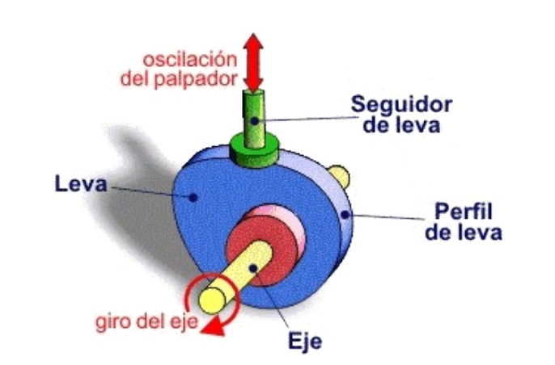
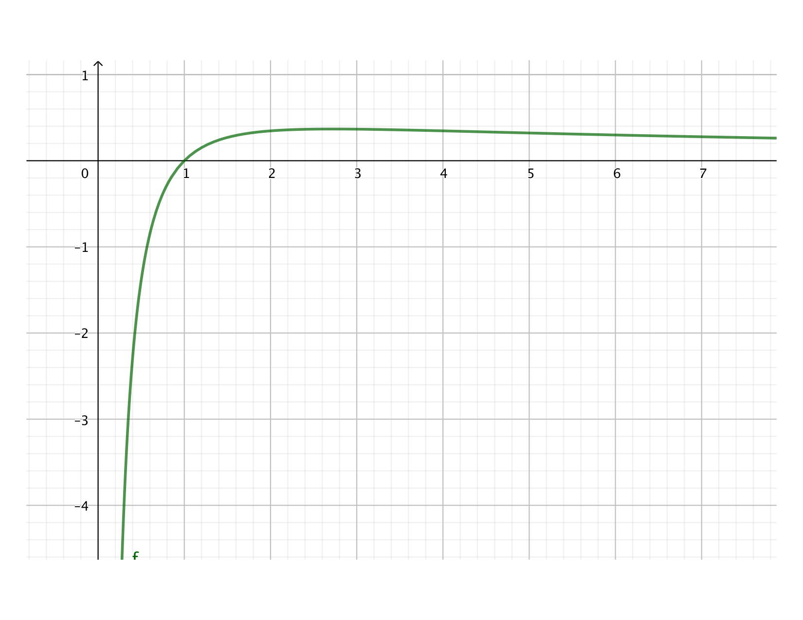

Capítulo 10 Utilidad del concepto de derivada
El concepto de derivada no es un concepto puramente teórico y que sirve para calcular tangentes a curvas, sino que tiene una utilidad directa para muchos problemas. En este capítuo veremos algunos ejemplos.
10.1 Curvas infinitamente derivables
10.1.1 Curvas de carretera
Estamos diseñando la curva de una carretera. Queremos que tenga un trazado que los coches puedan seguir a la velocidad estipulada para este tramo. Esto significa que la curva debe ser suficientemente abierta, pero también significa que debe ser infinitamente derivable. Veamos por qué.
Empezamos con los dos tramos de recta que queremos unir con la curva:
La dos rectas y la curva van a formar una función y queremos saber qué características debe tener esta función. La primera exigencia es que haya carretera en todo el tramo. Es decir, exigimos que la función sea continua.
Podríamos prolongar las dos rectas hasta que se encuentren:

El problema es que ningún coche puede seguir este trazado, pues exige que en el punto de unión cambie de dirección instantáneamente. La dirección del coche viene dada por la tengente a la curva, luego este cambio instantáneo de dirección en el punto de unión equivale a decir que la función no es derivable en ese punto. Luego ya tenemos una segunda característica: la función debe ser derivable en todos los puntos.
La siguiente solución que se nos ocurre es unir las rectas mediante un círculo. Si elegimos el círculo con el radio adecuado para que el coche pueda circular a la velocidad establecida y hacemos la unión con las rectas de manera que éstas sean tangentes a él, entonces aseguramos que es derivable en todos los puntos:
Pero un coche tampoco puede seguir este trazado. El motivo es el siguiente. En las rectas las ruedas delanteras deben ir paralelas al eje del coche; pero en la curva, que es un círculo, las ruedas deben formar un cierto ángulo \(\alpha\) con el eje del coche. Una vez en la curva no hay que mover el volante, pues con un ángulo constante en las ruedas el coche traza un círculo, pero en el punto de unión de la recta con el círculo hay que cambiar el ángulo de las ruedas de forma instantánea, y esto es físicamente imposible.
Desde el punto de vista de la derivabilidad, la derivada segunda de una recta es 0, pero la derivada segunda de un tramo de círculo es una constante. Luego en los puntos de unión de la recta con el círculo tenemos derivada primera, pero no tenemos derivada segunda.
Vemos que la derivada segunda está relacionada con el ángulo que forman las ruedas con el eje del coche. Como ha de ser posible girar el volante con suavidad, debemos exigir que la funcion tenga derivada segunda en todos los puntos.
Y podríamos seguir con este análisis y llegar a la aconclusión que la función debe tener derivada tercera en todos los puntos, y derivada cuarta, y quinta, etc. Si no es infinitamente derivable, es físicamente imposible que el coche pueda seguir exactamente el trazado de la carretera.
Los ingenieros que diseñan carreteras hacen algo parecido a lo que hemos hecho nosostros: parten de dos rectas, una sección de círculo de radio adecuado para la parte central y después unen el círculo con las rectas mediante una curva llamada clotoide, que es infinitamente derivable y permite una transición que el coche puede seguir.
10.1.2 Levas
Una manera habitual de realizar un movimiento repetido de una pieza es mediante una leva. Un ejemplo típico es el accionamiento de las válvulas de un motor. Las levas están montadas sobre un eje, y al girar empuja un seguidor que hace mover la válvula o el mecanismo que sea.

Este accionamiento debe ser suave, sobre todo si la leva ha de girar rápido. Por ejemplo en un motor de coche el eje de la leva debe poder girar a 3000 rpm o 4000 rpm. Por argumentos similares al caso de las curvas de carretera se puede concluir que la función del perfil de la leva debe ser infinitamente derivable, pues si no, a velocidades elevadas habría vibraciones indeseadas que dañarían el mecanismo.
Pero no todas las levas son así. Hay algunas levas que están diseñadas para ir a poca velocidad y no importa que el mecanismo salte. Incluso están los mecanismos de carraca, que no son siquiera continuas, pues están diseñadas para poder girar en sólo una dirección:
En ninguno de los dos sentidos puede el seguidor seguir el perfil de la leva, pero en una dirección simplemente salta, lo que a bajas velocidades no es ningún problema, y en el otro, bloquea al eje impidiendo el movimiento.
En resumen, la función de la leva y la velocidad a la que debe ir, exige que los perfiles de las levas sean funciones con ciertas características de continuidad y derivabilidad.
10.2 Crecimiento
Vimos que la derivada nos indica la pendiente de una curva. Si la pendiente es positiva, eso quiere decir que la curva crece, si es negativa, quiere decir que decrece. Además, el valor de la derivada nos indica lo rçapido o lento que una curva crece (o decrece): cuanto mayor sea el valor absoluto de la derivada, más rápidamente varía.
Por ejemplo, supongamos la función \(f(x) = x^3+3x^2-x-3\). Digamos que esta función nos describe el valor (en Pa) de la presión en un cierto circuito hidráulico. Es un polinomio, luego sabemos que es una función continua. Si queremos saber dónde es positiva y dónde es negativa la presión, hemos de saber dónde es positiva y dónde es negativa la función. Igualamos la función a 0: \[x^3+3x^2-x-3 = 0.\]
Es una ecuación de tercer grado, no es inmediato pero se pueden calcular las raíces (y en todo caso sabemos hacerlo numéricamente, aplicando el teorema de Bolzano, como vimos en el apartado 7.4). Las raíces de esta función están en los puntos \(x = -3\), \(x = -1\) y \(x = 1\). Es fácil ver que \(\lim_{x \to \infty} x^3+3x^2-x-3 = \infty\), luego la función es positiva para \(x > 1\), es negativa para \(-1 < x < 1\), otra vez positiva para \(-3 < x < -1\) y negativa para \(x < -3\). ¿Pero dónde es creciente y dónde es decreciente?
Para ello hemos de ver dónde es positiva y negativa la derivada de la función. Derivamos y obtenemos \[f^{\prime}(x) = 3x^2 + 6x -1.\]
La función será creciente allá dónde la derivada sea positiva. Otra vez, es un polinomio, luego es continua y hemos de hallar sus raíces: \[3x^2 + 6x -1 = 0.\]
Las raíces son \(x = \frac{-13}{6}\) y \(x = \frac{1}{6}\). Luego la función es creciente para \(x > \frac{1}{6}\), decreciente para \(\frac{-13}{6} < x < \frac{1}{6}\) y otra vez creciente para \(x < \frac{-13}{6}\).
Queremos saber dónde el ritmo de decrecimiento es menor y cuánto vale. En general habría que hacer un análisis de la función derivada, pero en este caso es simple: sabemos que la derivada es una parábola, luego el punto donde el decrecimiento es máximo, es decir dónde la derivada es minima, es en el punto medio entre las raíces, es decir en \[x = \frac{\frac{-13}{6} - \frac{1}{6}}{2} = -\frac{7}{6}.\]
Para saber cuánto varía la presión en este punto, calculamos el valor de la derivada en \(x = -\frac{7}{6}\) y tenemos que la presión cae en ese punto del circuito a un ritmo de \(-3.92\) Pa/m.
10.3 Concavidad y convexidad
Ya hemos visto que la velocidad es la derivada de la posición. Pero la velocidad misma puede crecer o decrecer: si crece decimos que tenemos una aceleración positiva, y si decrece, que tenemos una aceleración negativa. Desde el punto de vista de las derivadas, la aceleración es positiva si la derivada segunda de la posición es positiva y negativa, si es negativa. Esto que, por experiencia, conocemos bien de posiciones, velocidades y aceleraciones, lo podemos extender a cualquier función y cualquier curva.
Tenemos una curva y calculamos su pendiente en diferentes puntos. Estamos “acelerando” si la pendiente es cada vez más positiva (o menos negativa).
En este caso decimos que la curva es convexa.
Si en cambio tenemos una curva en la que las pendientes son cada vez más negativas (o menos positivas) tenemos una curva que llamamos cóncava.
Nota. Los nombres de cóncava y convexa son bastante confusos: uno nunca se acuerda de cuál es cuál. Además los he visto usados al revés, llamando cóncava a lo que aquí llamamos convexa y viceversa. También los he visto llamados “cóncava para arriba” y “cóncava para abajo”. En casos confusos como es este, el nombre es menos importante que el concepto.
Cómo calcular la concavidad o convexidad de una curva se deduce fácilmente de la definición: si es convexa va “acelerando”, es decir, que la derivada primera es cada vez mayor, lo que quiere decir que la derivada segunda es positiva; si es cóncava va “decelerando”, luego la derivada primera es cada vez menor y la derivada segunda es negativa.
En resumen, dada una función \(f(x)\), si \(f^{\prime\prime}(x) > 0\) en una región, entonces decimos que la función es convexa en esa región. Si en cambio \(f^{\prime\prime}(x) < 0\) en una región, decimos que \(f(x)\) es cóncava en esa región.
Una función puede ser cóncava en unas regiones y convexa en otras. Fijémonos en la gráfica de la función \(f(x) = 0.05(x^3 - 21x -20)\):
Claramente es cóncava en la parte izquierda y convexa en la parte derecha. En algún punto alrededor de \(x = 0\) pasa de cóncava a convexa. Ese punto se llama un punto de inflexión. Es algo que estasw muy acostumbrado a notar. Si estás trazando curvas enlazadas en un coche, moto o bicicleta, hay un punto en el que pasas de estar en una curva a izquierdas a una a derechas: ese es el punto de inflexión.
Calcular el punto de inflexión es fácil: si es el punto en el que se pasa de convexa a cóncava, o lo que es lo mismo, de \(f^{\prime\prime}(x) > 0\) a \(f^{\prime\prime}(x) < 0\) (o viceversa), debe ser el punto donde \(f^{\prime\prime}(x) = 0\).
Vamos a practicar estos conceptos
Ejemplo 10.1 Calcula las regiones de concavidad y convexidad de la función \(f(x) = 0.05(x^3 - 21x -20)\).
Empezamos por calcular la derivada segunda:
\[\begin{align} f^{\prime}(x) &= 0.05(3x^2 -21)\\ f^{\prime\prime}(x) &= 0.05(6x) = 0.3 x \end{align}\]
Vemos que \(f^{\prime\prime}(x)\) es positiva para \(x > 0\) y negativa para \(x < 0\), luego la función es convexa para \(x > 0\) y cóncava para \(x < 0\) y tiene un punto de inflexión en \(x = 0\).10.4 Máximos y mínimos
Hay un dicho mallorquín que dices “Entre poc i massa, sa mesura passa” (“Entre poco y demasiado pasa la buena medida”). En otros idiomas hay dichos similares. Puede haber demaisado de algo y puede haber demasiaso poco de ese algo y lo que buscamos es la cántidad óptima de ese algo. Una de la utilidades mayores de las derivadas es poder calcular estos valors óptimos. Un ingeniero, al diseñar un producto, constantementese hace preguntas del estilo ¿cuál es el valor que minimiza el coste?¿cuál es la forma que maximiza su rigidez?¿cuál es el valor que minimiza las emisiones?¿Cuál es el valor que maximiza la satisfacción de los usuarios?
Gracias a las derivadas podemos calcular estos valores óptimos.
No es difícil ver que en un máximo la derivada debe ser 0. Tenemos una función que va creciendo, creciendo, hasta que en algún momento deja de crecer y empieza a decrecer. En ese momento es cuando es máximo. Como crecer quiere decir que la derivada es positiva, y decrecer quiere decir que la derivada es negativa, entonces es máximo en el punto donde la derivada es 0. Y análogamente con los mínimos: va decreciendo (derivada negativa) hasta que empieza a crecer (derivada positiva), luego en el mínimo la derivada es 0.
Esto se ve muy bien gráficamente:
Debe notarse que hemos mostrado que si hay un máximo o mínimo local, podemos asegurar que la derivada es 0, es decir, que la pendiente es horizontal. Pero puede ser que la derivada sea 0 y no tengamos un máximo o mínimo local, como se ve en la siguiente gráfica:
En este caso la función crece, para de crecer un instante, y después sigue creciendo, sin decrecer en ningún momento. Podemos observar que lo que ha cambiado es la concavidad y convexidad de la curva. Tenemos un punto de inflexión de pendiente horizontal.
10.4.1 Cálculo de máximos y mínimos
De esta discusión es fácil deducir cómo calcular, a partir de las derivadas de una función, si una función \(f(x)\) tiene un máximo o mínimo local. Para empezar, la derivada \(f^\prime (x)\) debe ser 0. Por lo tanto hemos de derivar la función y buscar las raíces de \(f^\prime (x)\). Digamos que en el punto \(a\) la derivada es 0, es decir \(f^\prime (a)\). Eso quiere decir que en este punto o tenemos un máximo o un mínimo o un punto de inflexión de pendiente horizontal. ¿Cómo sabemos cuál de los tres?
Para ello hemos de mirar la derivada segunda \(f^{\prime\prime} (x)\). Si tenemos un máximo, la función es cóncava en ese punto, luego ha de pasar que \(f^{\prime\prime} (a) < 0\); si es un mínimo, la función debe ser convexa, luego ha de pasar que \(f^{\prime\prime} (a) > 0\); y ya sabemos que si es un punto de inflexión ha de pasar que \(f^{\prime\prime} (a) = 0\).
Esto se puede resumir en el siguiente algoritmo:
Algoritmo para hallar máximo y mínimos locales de \(f(x)\).
- Calcula \(f^{\prime} (x)\) y \(f^{\prime\prime} (x)\)
- Halla las raíces de \(f^{\prime} (x)\)
- Para cada de las raíces \(r_i\) de \(f^{\prime} (x)\):
- Calcula \(f^{\prime\prime} (r_i)\)
- Si \(f^{\prime\prime} (r_i) < 0\) es un máximo; si \(f^{\prime\prime} (r_i) > 0\) es un mínimo; si \(f^{\prime\prime} (r_i) = 0\) es un punto de inflexión de pendiente horizontal
Practiquemos estas ideas.
10.4.2 Un ejemplo
Apliquemos el algoritmo.
- Empecemos por calcular las dos primeras derivadas: \[\begin{align} f^{\prime} (x) &= 3x^2 -10x +1\\ f^{\prime\prime} (x) &= 6x - 10 \end{align}\]
- Hallemos las raíces de \(f^{\prime} (x)\). Es una ecuación de segundo grado y las raíces son \(r_1 = 0.103\) y \(r_2 = 3.230\).
- Calculemos el valor de la derivada segunda para cada una de las raíces. Para la primera, \(f^{\prime\prime} (0.103) = -9.38 < 0\), luego es un máximo, y para la segunda, \(f^{\prime\prime} (3.230) = 9.38 > 0\), luego es un mínimo.
Resultado: La función \(f(x) = x^3 -5x^2 + x - 4\) tiene un máximo en \(x = 0.103\) y un mínimo en \(x = 3.230\).
10.4.3 Otro ejemplo
Hay muchos parámetros en este problema: el peso y la altura del barril, la superficie de la base del barril, la densidad del líquido, la altura del líquido en el barril… Si los usamos todos, la manipulación algebraica necesaria para resolver el problema se complica mucho. Vamos a simplificarlo. Para empezar, hacemos que el peso del barril sea 1, es decir, usamos el peso del barril como unidad de peso; hacemos lo mismo con la altura del barril: es también 1; la altura del líquido en el barril es \(h\), donde \(h\) toma un valor entre 0 (está vacío) y 1 (está lleno); el peso del líquido cuando el barril está lleno es \(p\): cuando está lleno, el líquido pesa \(p\) veces el peso del barril. Este parámetro \(p\) es un indicador de la densidad del líquido: cuánto mayor es \(p\), mayor es su densidad. Si \(p < 1\) quiere decir que cuando está lleno, el líquido contenido pesa menos que el barril; si \(p = 1\), quiere decir que con el barril lleno, el líquido pesa lo mismo que el barril; si \(p > 1\) entonces, cuando lleno, el líquido pesa más que el barril.
Tenemos el barril, con líquido hasta una altura \(h\). El centro de gravedad del barril está a una altura 1/2 y el peso del barril es 1; el centro de gravedad del líquido está a una altura \(h/2\) y el peso del líquido es \(p\cdot h\). El centro de gravedad del conjunto, \(C(h)\), la podemos calcular como la media ponderada de los dos centros de gravedad, con las proprociones de los dos pesos como ponderación:
\[C(h) = \frac{1}{1 + ph} \frac{1}{2} + \frac{ph}{1 + ph} \frac{h}{2} = \frac{1 + ph^2}{2 + 2ph}. \]
Ante un problema algo largo y complicado, es conveniente ir haciendo comprobaciones intermedias para eliminar posibles errores. Yo sólo indicaré cuçáles son las comprobaciones que debéis hacer. la primera es asegurarnos que para \(h = 0\) y para \(h = 1\), el valor de \(C(h)\) es 1/2.
Para hallar el mínimo, hemos de derivar \(C(h)\) y ver dónde es 0:
\[C^{\prime}(h) = \frac{-2p + 2p^2h^2 + 4ph}{(2 + 2ph)^2} = 0 \]
Como el denominador nunca es 0, entonces basta igualar a 0 el numerador: \[-2p + 2p^2h^2 + 4ph = 0\] lo que arreglando un poco queda \[2ph^2 + 4h - 2 = 0\] Esta es una ecuación de segundo grado que podemos resolver. Tiene dos soluciones, una para \(p\) negativo, que no tiene sentido en este contexto, y la otra es \[ h_\min = \frac{\sqrt{p + 1} - 1}{p}.\]
Para comprobar que no nos hemos equivocado al resolver la ecuación, lo que debemos hacer es meter este valor en la ecuación y comprobar que efectivamente da 0. Hacerlo algebraicamente es largo, pero se pueden hacer dos o tres comprobaciones para valores convenientes de \(p\), por ejemplo \(p = 3\) y \(p = 8\).
Deberíamos calcular la derivada segunda y ver si es positiva, pero por las características físicas del problema sabemos que ha de ser un mínimo, que no puede ser un máximo. Luego nos ahorramos el trabajo.
Vemos que cuanta mayor es la densidad del líquido, menos hemos de meter para bajar al mínimo el centro de gravedad.
Para hallar el valor de este centro de gravedad mínimo, introducimos el valor de \(h_\min\) en la expresión de \(C(h)\). Tras un poco de álgebra queda \[C_\min (p) = \frac{1 + p -\sqrt{p+1}}{p\sqrt{p+1}}.\]
Y podemos hacer otra comprobación de lo razonable de la respuesta: para \(p = 0\) (el líquido que hemos metido no pesa nada), el valor mínimo del centro de gravedad debe ser 1/2 (lógico, si el líquido no pesa nada, el centro de gravedad no se mueve de su posición de 1/2 mientras llenamos). Esto exige calcular el límite cuando \(p\) tiende a 0, que es de tipo \(\frac{0}{0}\).
**Resultado: Hemos calculado que para que el centro de gravedad esté lo más bajo posible, hemos de meter líquido hasta una altura de \[ h_\min = \frac{\sqrt{p + 1} - 1}{p}.\] El valor del centro de gravedad mínimo es \[C_\min (p) = \frac{1 + p -\sqrt{p+1}}{p\sqrt{p+1}}.\]
10.5 Dibujo de gráficas
Una buena formna de practicar todo lo visto de funciones es aprender a dibujar su gráfica. Uno se puede preguntar para qué analizar y dibujar gráficas de funciones cuando esto te lo hace el ordenador, o incluso la calculadora. Pero es lo mismo que preguntarse para qué conocer una persona si se puede ver una foto de ella. Si uno analiza y dibuja la gráfica de una función aprende mucho más de lla, la entiende mucho mejor, que si simplemente la escribe en el ordenador y mira la curva que sale. Y si uno repite este ejercicio a menudo, se crea una intuición de las funciones –de si es “buena” o “mala”, de sus peligros y lugares donde tener cuidado– que es muy valiosa.
Para analizar y dibujar la gráfica de una función vamos a estudiar las siguientes características:
- Dominio: dónde existe y no existe;
- Continuidad, derivabilidad y extremos: dónde es continua, dónde es derivable, qué hace la función cuando tiende a infinito
- Signo: dónde es positiva y dónde negativa;
- Cruce con los ejes: en qué puntos cruza con los ejes de abscisas y ordenadas;
- Asíntotas: tanto verticales como horizontales
- Crecimiento: dónde crece o decrece;
- Concavidad: dónde es cóncava, dónde convexa, dónde esán los puntos de inflexión;
- Máximos y minimos:_ qué máximos y minimos locales tiene y donde están situadas;
Hagamos dos ejemplos:
Ejemplo 10.2 Dibuja la gráfica de la función \[y = \frac{\log(x)}{x}\]
Dominio: El numerador sólo existe si \(x>0\) y para el dominio del numerador el denominador siempre es distinto de 0, luego el dominio de \(y\) es \(x > 0\).
Continuidad, derivabilidad y extremos: Tanto el numerador como el denoinador son continuos en todo su dominio, luego la función es continua.
Las derivadas son \[\begin{align} y^\prime &= \frac{1 - \log(x)}{x^2}\\ y^{\prime\prime} &= \frac{2\log(x) - 3}{x^3} \end{align}\]
Ambas derivadas existen en todos los puntos del dominio de la función.
Como \(x\) domina sobre \(\log(x)\), el límite cuando tiende a \(\infty\) es 0. Y el límte cuando \(x\) tiende a 0 es \(\-infty\).
Signo: El denominador es positivo en todo el dominio, el numerador es positivo si \(x > 1\). Luego \(y\) es positivo si \(x > 1\).
Cruce con los ejes: Nunca cruza con el eje \(Y\). Cruza con el eje \(X\) cuando \(\log(x) = 0\), es decir, en \(x = 1\).
Asíntotas: Ya hemos visto que \(\lim_{x \to \infty} = 0\), luego \(y = 0\) es una asíntota horizontal. También hemos visto que \(\lim_{x \to 0^+} = -\infty\), luego hay una asíntota vertical en \(x = 0\).
Crecimiento: Hemos de analizar el signo de \[y^\prime = \frac{1 - \log(x)}{x^2}\]
El denominador es siempre positivo. El numerador es positivo si \(\log(x) < 1\), luego la función crece (la derivada es positiva) si \(x < e\) y decrece si \(x > e\). La derivada es 0 en \(x = e\).
Concavidad: Hemos de analizar el signo de \[y^{\prime\prime} = \frac{2\log(x) - 3}{x^3}\]
El denominador es positivo en todo el dominio. El numerador es positivo si \(2\log(x) - 3 > 0\), es decir si \(log(x) > 3/2\). Esto pasa si \(x > e^{3/2} = 4.48\). Luego es cóncava para \(x< e^{3/2}\) y convexa si \(x > e^{3/2}\). Hay un punto de inflexión en \(x = e^{3/2}\). En ese punto la función vale \[\frac{3/2}{e^{3/2}} = 0.335\]
Máximos y minimos: Ya hemos visto que la derivada es 0 en \(x = e\). También sabemos que en este punto la función es cóncava, luego es un máximo.
En ese punto la función vale \[y = \frac{1}{e} = 0.367\]
Y con esta información ya podemos dibujar la función:
Ahora hagamos un ejemplo con una función algo más compleja.
Ejemplo 10.3 Dibuja la gráfica de la función \[y = \frac{x}{\sqrt[3]{x^2 -1}}\]
Dominio: Es una división de polinomios, luego existe en tods los puntos donde el denominador no sea 0. El dominio es toda la recta real excepto los puntos \(x = \pm 1\).
Continuidad, derivabilidad y extremos: Al ser una división de polinomios, es continua en todos los puntos donde el denominador no es 0. En \(x = \pm 1\) los límites tiende a \(+\infty\) por un lado y \(-\infty\) por el otro, luego presenta una discontinuidad no evitable en estos puntos. Calculemos las derivadas primera y segunda.
Nota: Quizá es más fácil derivar la función si la escribimos como \(y = x(x^2 -1)^{-1/3}\).
Las derivadas son \[\begin{align} y^\prime &= \frac{x^2 -3}{3\sqrt[3]{(x^2 -1)^4}}\\ y^{\prime\prime} &= -\frac{2x(x^2 -9)}{9\sqrt[3]{(x^2 -1)^7}} \end{align}\]
Ambas derivadas existen en todos los puntos excepto \(x = \pm 1\).
Es inmediato ver que el límite cuando \(x\) tiende a \(\infty\) es \(\infty\) y el límite cuando \(x\) tiende a \(-\infty\) es \(-\infty\).
Signo: El numerador es positivo si \(x>0\) y negativo si \(x < 0\). El denominador es positivo si \(x^2 - 1 >0\), es decir si \(x > |1|\), y negativo si \(x^2 - 1 <0\), es decir si \(x < |1|\). Juntando todo:
| \(x < -1\) | \(-1 < x < 0\) | \(0 < x < 1\) | \(x > 1\) | |
|---|---|---|---|---|
| numerador | \(-\) | \(-\) | \(+\) | \(+\) |
| denominador | \(+\) | \(-\) | \(-\) | \(+\) |
| \(y\) | \(-\) | \(+\) | \(-\) | \(+\) |
Cruce con los ejes: El único lugar donde el numerador es 0 es \(x = 0\). Es el único cruce con ambos ejes.
Asíntotas: Ya hemos visto que los límites en el infinito son infinitos, luego no tiene asíntotas horizontales. El denominador se vuelve 0 en \(x = \pm 1\), y en esos puntos el numerador no es cero, luego tenemos asíntotas verticales en \(x = \pm 1\). Estrictamente, deberíamos calcular los límites laterales en esos puntos, pero como ya sabemos el signo, no es necesario: Tiende a \(-\infty\) cuando se acerca a \(x = -1\) por la izquierda y a \(+\infty\) cuando se acerca por la derecha; y tiende a \(-\infty\) cuando se acerca a \(x = 1\) por la izquierda y a \(+\infty\) cuando se acerca por la derecha.
Crecimiento: Hemos de analizar el signo de \[y^\prime = \frac{x^2 -3}{3\sqrt[3]{(x^2 -1)^4}}\]
El denominador es siempre positivo, luego basta mirar el signo del numerador, \(x^2 - 3\). Es inmediato ver que es positivo para \(x < -\sqrt{3}\), es negativo para \(-\sqrt{3} < x < \sqrt{3}\) y es otra vez positivo para \(x > \sqrt{3}\). Y va a ser 0 para \(x = \pm\sqrt{3}\).
Concavidad: Hemos de analizar el signo de \[y^{\prime\prime} = -\frac{2x(x^2 -9)}{9\sqrt[3]{(x^2 -1)^7}}\] El denominador en este caso puede ser positivo o negativo. Podemos crear un cuadro similar al que hemos hecho antes. Hemos de tener cuidado con el signo menos que precede a todo. En este caso los puntos de interés son \(x = 0\), \(x = \pm 1\) y \(x = \pm 3\).
| \(x < -3\) | \(-3 < x < -1\) | \(-1 < x < 0\) | \(0 < x < 1\) | \(1 < x > 3\) | \(x > 3\) | |
|---|---|---|---|---|---|---|
| numerador | \(-\) | \(+\) | \(+\) | \(-\) | \(-\) | \(+\) |
| denominador | \(+\) | \(+\) | \(-\) | \(-\) | \(+\) | \(+\) |
| \(y^{\prime\prime}\) | \(+\) | \(-\) | \(+\) | \(-\) | \(+\) | \(-\) |
Hay puntos de inflexión en los puntos donde el numerador es 0: \(x = 0\) y \(x = \pm 3\). En estos puntos el valor de la función es \[ y(-3) = -1.5; \qquad y(0) = 0; \qquad y(3) = 1.5\]
Máximos y minimos: Ya hemos visto que la derivada es 0 en \(x = \pm\sqrt{3}\). Del cuadro anterior, vemos que \(y^{\prime\prime}(-\sqrt{3}) <0\) y que \(y^{\prime\prime}(\sqrt{3}) >0\). Luego tenemos un máximo en \(x = -\sqrt{3}\) y un mínimo en \(x = \sqrt{3}\). El valor de la función en estos puntos es \[y(-\sqrt{3}) = -1.375; \qquad y(\sqrt{3}) = 1.375\]
Y con esta información ya podemos dibujar la función:10.6 Polinomios de Taylor
Los polinomios son funciones muy manejables: son fáciles de integrar y derivar, fáciles de manipular algebraicamente, etc. Hay otras funciones, como por ejemplo las trigonométricas y logarítmicas, que son mucho menos manejables. Es por eso que nos gustaría a menudo poder pasar de una función poco manejable a una aproximación polinómica: si la aproximación es suficientemente buena, perdemos un poco en precisión, pero ganamos mucho en manejabilidad. Los polinomios de Taylor nos permiten encontrar el polinomio del grado que queramos que mejor se aproxima a una función en las inmediaciones de un punto. Veamos cómo se calculan, empezando con dos ejemplos.
10.6.1 Ejemplo 1: \(f(x) = \sin(x)\), en las inmediaciones de \(x = 0\)
La función de nuestro primer ejemplo es \(f(x) = \sin(x)\) y queremos el polinomio que mejor se aproxima a esta función en las inmediaciones de \(x = 0\). Cómo no sabemos de qué grado nos interesa el polinomio, vamos a encontrar cuatro aproximaciones con 4 polinomios: uno de grado 0, \(P_0(x)\); uno de grado 1, \(P_1(x)\); uno de grado 2, \(P_2(x)\); y uno de grado 3, \(P_3(x)\).
Empecemos con \(P_0(x) = c_0\), una constante. La mejor aproximación que podemos hacer es que esa constante \(c_0\) sea el valor de la función en \(x = 0\), pues si no ni siquiera estamos aqcertanto el valor en el punto. Como \(\sin(0) = 0\), llegamos a la conclusión que el mejor polinomio de grado 0 que mejor aproxima nuestra fución es \(P_0(x) = 0\).
Sigamos con \(P_1(x) = c_0 + c_1 x\), una recta. Queremos de este polinomio, por los mismos motivos de antes, que en el punto \(x = 0\) valga lo mismo que nuestra función \(\sin(x)\), es decir que \(P_1(0) = 0\). También queremos que la recta crezca o decrezca en \(x = 0\) al mismo ritmo que \(\sin(x)\), pues si no, el polinomio se alejaría de la función demasiado raápidamente. Luego queremos que \(P^\prime_1(0) = \sin^\prime(0) = \cos(0) = 1\). Esto da lugar a ese sistema de ecuaciones: \[\begin{align} P_1(0) &= c_0 + c_1\cdot 0 = c_0 = 0\\ P^\prime_1(0) &= c_1 = 1 \end{align}\]
Luego el polinomio de grado 1 que buscamos es \(P_1(x) = x\).
Vayamos con el polinomio de grado 2, \(P_2(x) = c_0 + c_1 x + c_2 x^2\), que es una parábola. Por los mimos motivos de antes, queremos que \(P_2(0) = 0\) y que \(P_2^\prime(0) = 1\). Ahora también queremos que la concavidad o convexidad de \(P_2(x)\) en \(x = 0\) sea la misma que la de \(\sin(x)\), para que el polinomio no se aleje de \(\sin(x)\) más rápidamente de lo necesario. Sabemos que eso es la derivada segunda: \(\sin^{\prime\prime}(0) = -\sin(0) = 0\). Por lo tanto queremos que \(P_2^{\prime\prime}(0) = 0\). Esto da lugar al sistema de ecuaciones \[\begin{align} P_2(0) &= c_0 + c_1\cdot 0 + c_2\cdot 0 = c_0 = 0\\ P^\prime_2(0) &= c_1 + 2c_2 x = c_1 + 2c_2 \cdot 0 = c_1 = 1\\ P_2^{\prime\prime}(0) &= 2c_2 = 0 \end{align}\]
Y el polinomio de grado 2 que mejor aproxima \(\sin(x)\) en las cercaniás de \(x = 0\) es \(P_2(x) = x\).
Para terminar, estudiemos el polinomio de grado 3, \(P_3(x) = c_0 + c_1 x + c_2 x^2 + c_3x^3\). Ya sabemos que queremos que \(P_3(0) = 0\), \(P^\prime_3(0) = 1\) y P_3^{}(0) = 0$. Ahora también queremos que la derivada tercera de nuestro polinomio sea la misma que la de \(\sin(x)\) en \(x = 0\). No tenemos nombre para esto, pero es fácil ver que debe ser así. la derivada tercera de \(\sin(x)\) en \(x = 0\) es \(-1\). Esto da lugar al sistema de ecuaciones: \[\begin{align} P_3(0) &= c_0 + c_1\cdot 0 + c_2\cdot 0^2 + c_3\cdot 0^3= c_0 = 0\\ P^\prime_3(0) &= c_1 + 2c_2 0 + 3c_3 0^2= c_1 = 1\\ P_3^{\prime\prime}(0) &= 2c_2 + 6c_3\cdot 0 = 2c_2 =0\\ P_3^{\prime\prime\prime}(0) &= 6c_3 = -1 \end{align}\]
Y el polinomio de tercer grado que mejor se aproxima a \(\sin(x)\) en las cercanías de \(x = 0\) es \(P_3(x) = x - \frac{1}{6}x^3\).
Conviene notar que al calcular un polinomio de grado superior, se conservan los coeficientes que ya teníamos: los coeficientes \(c_0, c_1\) y \(c_2\) de \(P_2(x)\) son los mismos que en \(P_3(x)\). No es casualidad. Si nos fijamos en el proceso seguido, vemos que tiene que ser así. Luego si ahora quisiéramos calcular \(P_4(x)\), no tenemos que calcular todos los coeficientes, sino sólo \(c_4\), igualando \(P^{\prime\prime\prime\prime}(0)\) con \(\sin^{\prime\prime\prime\prime}(0)\).
Vayamos con otro ejemplo.
10.6.2 Ejemplo 2: \(f(x) = \log(x)\), en las inmediaciones de \(x = 1\)
Empecemos con \(P_0(x) = c_0\), una constante. Sabemos que la mejor aproximación que podemos hacer es que esa constante \(c_0\) sea el valor de \(\log(x)\) en \(x = 1\). Como \(\log(1) = 0\), llegamos a la conclusión que el mejor polinomio de grado 0 que mejor aproxima nuestra fución es \(P_0(x) = 0\).
Sigamos con \(P_1(x) = c_0 + c_1 x\). Queremos que \(P(1) = 0\) y que \(P^\prime(1) = \log^\prime(1) = 1\). El sistema de ecuaciones que nos queda es:
\[\begin{align} P_1(0) &= c_0 + c_1\cdot 1 = c_0 + c_1 = 0\\ P^\prime_1(0) &= c_1 = 1 \end{align}\]
Resolviendo nos queda que \(c_1 = 1\) y \(c_0 = -1\).
Pero ahora el coeficiente \(c_0\) no es el mismo que el de \(P_0(x)\). Esto es un enorme fastidio, pues significa que aunque conozca \(P_n(x)\), si quiero \(P_{n+1}(x)\) tengo que volver a empezar desde el principio.
Si me fijo en por qué esto pasa ahora y no pasaba en el ejemplo anterior, vemos que es porque, al evaluar en \(x=0\) sólo uno de los coeficientes permanecía en cada ecuación, pues los demás al multiplicar por 0, desaparecían. Pero ahora, al evaluar en \(x = 1\), no desaparecen.
Por suerte, esto lo podemos arreglar fácilmente. Ya que estamos aproximando la función alrededor de \(x = 1\), “centramos” nuestro polinomio en \(x = 1\): \(P_1(x) = c_0 + c_1(x-1)\), y así sólo uno de los coeficientes permanecerá en cada ecuación:
\[\begin{align} P_1(0) &= c_0 + c_1\cdot (1 -1) = c_0 = 0\\ P^\prime_1(0) &= c_1 = 1 \end{align}\]
Y el polinomio que mejor aproxima \(\log(x)\) en los alrededores de \(x = 1\) es \(P_1(x) = x-1\).
Nótese que es el mismo polinomio de antes, pero al escribirlo de esta manera, facilita el cálculo de los coeficientes.
Calculemos ahora \(P_2(x) = c_0 + c_1(x-1) + c_2(x-1)^2\). Sabemos que \(c_0 = 0\) y \(c_1 = 1\). Hemos de calcular \(c_2\). Hemos de igualar las derivadas segundas. La derivada segunda del logaritmo es \(\frac{-1}{x^2}\), y la del polinomio es \(P_2(x)\) es \(2c_2\). Evaluando en \(x = 1\):
\[\frac{-1}{1^2} = -1 = 2c_2.\]
El polinomio queda \(P_2(x) = (x-1) - \frac{1}{2}(x-1)^2\).
Calculemos ahora \(P_3(x) = c_0 + c_1(x-1) + c_2(x-1)^2 + c_3(x-1)^3\). Sólo hemos de calcular \(c_3\). La derivada tercera del logaritmo es \(\frac{2}{x^3}\) y la del polinomio es \(6 c_3\). Evaluando en \(x = 1\): \[\frac{2}{1^3} = 2 = 6c_3.\]
El polinomio queda \[P_3(x) = (x-1) - \frac{1}{2}(x-1)^2 + \frac{1}{3}(x-1)^3.\]
10.6.3 Forma general de los polinomios de Taylor
Con lo que hemos aprendido de los ejemplos tenemos casi todo lo necesario para obtener la forma general del polinomio de Taylor de cualquier función.
Sea \(f(x)\) y queremos hallar el polinomio de grado \(n\) que mejor aproxima a \(f(x)\) en las inmediaciones de \(x = a\). Hemos visto que nos conviene que el polinomio tenga la forma \[ P_n(x) = c_0 + c_1(x-a) + c_2 (x-a)^2 + \cdots + c_n (x-a)^n.\]
También hemos visto que para obtener los valores de los coeficientes hemos de igualar \(P_n(a)\) a \(f(a)\); \(P^\prime_n(a)\) a \(f^\prime(a)\); \(P^{\prime\prime}_n(a)\) a \(f^{\prime\prime}(a)\); y así hasta la derivada \(n\)-sima, \(P^{(n)}_n(a) = f^{(n)}(a)\).
Además, de la primera ecuación, \(P_n(a) = f(a)\), obtendremos el valor de \(c_0\), de la ecuación \(P^\prime_n(a) = f^\prime(a)\), obtendremos el valor de \(c_1\) y así sucesivamente.
El último detalle que nos falta es el siguiente: \[\frac{d^n}{dx^n}c_n(x-a)^n = n!\,c_n \]
Sabiendo esto, es inmediato ver que la igualdad \[P^{(n)}_n(a) = f^{(n)}(a)\] se convierte en \[n!\,c_n = f^{(n)}(a).\] De donde podemos obtener el valor de \(c_n\): \[c_n = \frac{1}{n!}f^{(n)}(a).\]
Y ya podemos obtener la forma general del polinomio de Taylor:
\[P_n(x) = f(a) + f^\prime(a)(x-a) + \frac{1}{2}f^{\prime\prime}(a) (x-a)^2 + \cdots + \frac{1}{n!}f^{(n)}(a) (x-a)^n.\]
10.6.4 Hasta dónde llegar: Series de Taylor
Si nos fijamos en las gráficas de los polinomios de Taylor de la función \(\sin(x)\) en las cercanías de \(x = 0\), podemos observar que \(P_1(x) = x\) nos da una buena aproximación si estamos muy cerca de \(x = 0\), mientras que \(P_3(x) = x - \frac{1}{6}x^3\) nos da una buana aproximación incluso si nos alejamos algo de \(x = 0\). Esto nos da la idea que, si cogemos suficientes términos, podemos obtener una buena aproximación incluso si estamos muy lejos de \(x = 0\). Y eso es cierto… a veces.
Si cogemos infinitos términos el polinomio de Taylor se convierte en la serie de Taylor. Por ejemplo, la serie de Taylor de \(\sin(x)\) cogiendo los valores en \(x = 0\) es \[x - \frac{1}{3!}x^3 + \frac{1}{5!}x^5 - \frac{1}{7!}x^7 + \cdots\] Esta serie converge para todo \(x\), y por lo tanto, puedo aproximar adecuadamente el \(\sin(x)\) para cualquier valor de \(x\), por grande que sea, mediante un polinomio de Tylor de grado suficiente.
Lo mismo pasa con el polinomio de Taylor de \(e^x\), tomado en \(x = 0\). Es \[1 + \frac{x}{1!} + \frac{x^2}{2!} + \cdots + \frac{x^n}{n!} + \cdots\] También converge para todo valor de \(x\) y podemos aproximar con precisión suficiente la función \(e^x\), por grande que sea \(x\), si cojo una cantidad suficiente de términos.
Pero eso no pasa para todas las series de Taylor. Si cogemos la serie del logaritmo, centrado en \(x = 1\): \[(x-1) - \frac{1}{2}(x-1)^2 + \frac{1}{3}(x-1)^3- \frac{1}{3}(x-1)^3\ + \cdots\] Esta serie sólo converge para \(0 < x < 2\). Para \(x > 2\), diverge (oscila). Luego puedo calcular \(\log(1.9)\) con toda la precisión que yo quiera si cojo un número suficiente de términos, pero no puedo calcular con este polinomio el valor de \(\log(2.1)\) por muchos términos que coja.
Cada serie de Taylor tiene su radio de convergencia. Puedo calcular el valor de una función usando su polinomio de Taylor con tanta precisión como yo quiera, siempre que esté dentro del radio de convergencia. Si no, no puedo.
No vamos a profundizar más en esta cuestión. Simplemente recordar que no simpre puedo aproximar un valor alejado del centro con un polinomio de Taylor a base de coger muchos términos.